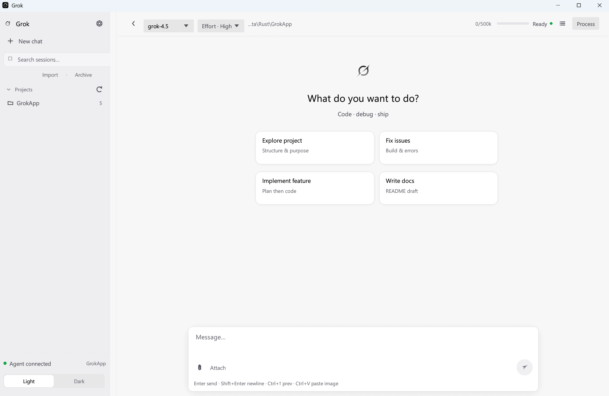
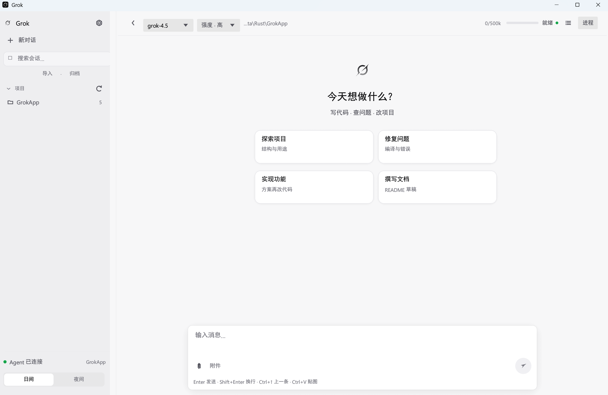

stdio 子进程，状态一眼可见
启动并托管 grok agent stdio，自动探测 CLI 路径。连接、就绪、断开都在界面层完成。
Desktop
→
ACP
→
grok agent
→
tools / MCP
由 晴辰云 QingChen Cloud 开源的非官方桌面客户端：经 ACP 连接本机官方 grok agent。仓库 qingchencloud/grok-app。
连接、流式输出、会话恢复、图片与权限——聚焦每天都在用的能力，长尾命令仍回 CLI。
启动并托管 grok agent stdio，自动探测 CLI 路径。连接、就绪、断开都在界面层完成。
回复、思考、工具与计划实时渲染；生成中可停止。
读取 ~/.grok/sessions，预览并 session/load，与 TUI 共享历史。
模型下拉与工作目录切换，参数直接进入 session。
粘贴、选文件、拖放 → ACP image 内容块。
工具调用可弹窗批准/拒绝，或开启 always-approve 模式。
设置页写入 config.toml（不覆盖无关项）；内置 CLI 安装入口；packaging/ 产出便携包与 setup zip。
桌面只做壳与交互；认证、模型、工具、MCP、skills 仍由官方 Grok CLI 提供（本项目不托管密钥）。
原生窗口、会话列表、聊天气泡、设置与权限弹窗。偏好写入 %APPDATA%\GrokApp。
双向流：update、load、cancel、image blocks。桌面不直连 xAI HTTP 聊天接口。
本机 grok 负责登录态、模型路由、工具与 skills。与 TUI 同一套能力。
侧栏会话 · 顶栏状态 · 时间线 · 输入区——和你已经熟悉的 Agent 工作流对齐。
深色炭黑 + 系统蓝强调，对齐应用内 theme tokens；日间模式方便官网阅读与演示。
桌面路径、cwd、模型、窗口偏好。
CLI 权限 / 压缩等可在设置页映射写入 ~/.grok/config.toml。
与 TUI 共享会话摘要与恢复数据。


Windows 推荐安装包：下载后双击即可安装，无需解压。macOS 提供独立可执行文件。
Setup.exe · 双击安装 · 无需管理员权限
下载 Setup.exe正在获取最新版本…
独立二进制，下载后直接运行
下载 macOS 版GitHub Releases 历史版本与校验文件
打开 Releases需要先安装官方 Grok CLI 并执行 grok login。
先有 CLI 与登录态，再跑桌面壳。开发用热重载，分发用 packaging。